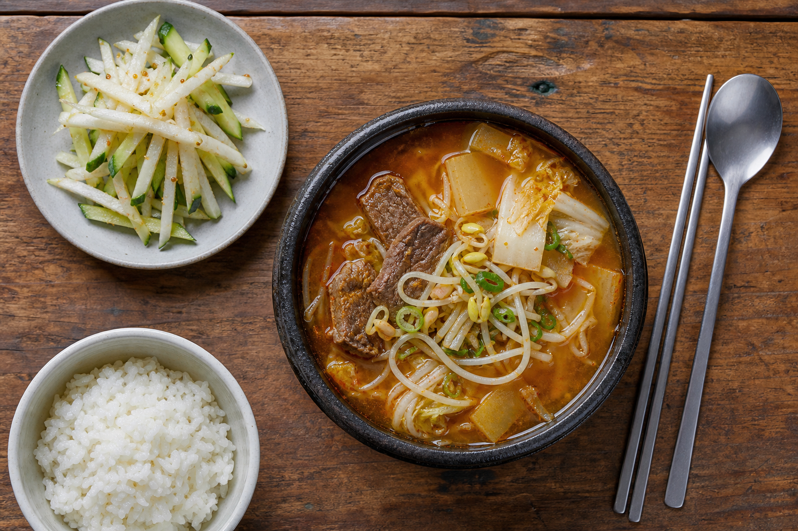

늦여름,
뜨거운 한 그릇
한낮에는 여전히 여름이지만 저녁 바람에는 다음 계절이 묻어납니다. 이번 호는 국밥을 중심에 놓고, 그 맛을 만든 사람과 안성의 농산물, 해 질 무렵의 여행을 한 길로 이었습니다.
Cover Stories
한 그릇에서 시작된 네 개의 이야기
흥미로운 맛에서 사람의 노동과 제철 농산물, 실제 방문 정보로 자연스럽게 이어집니다.

Home Table집에서 이어가는
집에서 이어가는
안성의 한 그릇
2016년 안성시 소개 재료를 참고한 가정용 개발안과 배·오이 겨자초무침을 한 식탁에 담았습니다. 발간 전 2회 조리 테스트와 취재처 감수를 거칩니다.
레시피 시안 보기Issue Map